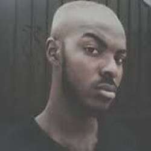

Kobe Subramaniam Talk: A Whole New World with Robotics
Kobe Subramaniam is a recent graduate of the University of Cape Coast's School of Physical Sciences with a Bachelor's Degree in Information Technoloy. He believes in Art,Technology and Simple Acts of Kindness. He is a Robotics enthusiast and he hacks Arduino, Raspberry Pi and you will find him working on initiatives such Afrimakers. While not being techie, you will find him with his DSLR camera taking photos. Kobe, is a Basketball enthusiast and you will find him watching , The Heatles , chasing another Championship. He is also the GDG Country Mentor for Ghana
websi.te @kobegigs